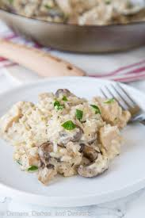

Simple Chicken & Rice

Description
An easy mid-week evening meal, that takes ~ 20 minutes to make!
Serves: 2
Ingredients
- 160g White Rice
- 350g Chicken Thighs or Breast
- Green Pepper
- Baby Button Mushrooms
- Salt
- Garlic
- Ground Coriander
- Cream of Chicken and Mushroom Soup
Steps
- Boil a medium pot half filled with water, and add a pinch of salt
- As the water comes to the boil, set a wok to a medium meat with a splash of oil of your choosing
- Add the White Rice to the pot for 10 minutes...
- ...Whilst the rice is cooking, add the chicken to the wok with a teaspoon of coriander
- Stir the wok, and add the garlic until the chicken is well whitened
- Turn down the heat by an increment or two on the wok, and add the diced peppers
- Stir and cook for a couple of minutes, and add a handful of baby button mushrooms
- Add the soup, and stir frequently, until the rice is cooked
- Drain the rice, and place the contents on the plates
- Serve the chicken and veg, and you're ready to eat!